Didot is a modern serif typeface created in 1784 by Firmin Didot and the Didot family, a well-known group of
printers and typographers in France. Didot was created during the Enlightenment, a time that valued logic,
order and clarity, which are clearly reflected in the typeface's structure. Didot is known for its high contrast
between thick and thin strokes, vertical stress, and very thin serifs. These features were possible because of
improvements in printing technology, including smoother paper and more precise presses. The typeface was designed
mainly for high-quality printed materials, such as books and official documents where sharp details were desired
to communicate elegance. Didot became popular in France during the French Revolution and the Napoleonic era, and
it represented modernity and sophistication. Because of its stylish look, it was later associated with fashion and
luxury, which is still seen today. Didot is often used in fashion magazines and high-end branding to create a sense
of elegance and prestige.
Bodoni
Bodoni is a modern serif typeface designed by Giambattista Bodoni, an Italian typographer working in Parma, Italy in
the late 1700s. The most recognizable versions of Bodoni were created around 1798, while Bodoni was working as the
director of the Royal Printing House. This typeface was created during the Enlightenment, when designers valued structure,
balance, and logic. Bodoni is known for its strong contrast between thick and thin strokes, vertical stress, and sharp
serifs. The typeface is clean and controlled, showcasing the technical skill of the printer. Bodoni was meant for formal
and high-end printing, such as books, royal documents, and luxury publications. The typeface reflects an influence of
neoclassical art and Roman inscriptions, which were popular at the time. Today, Bodoni is still used in editorial design
and branding, especially to achieve a dramatic, polished look.
Comparison
Pentagram comparison of Didot and Bodoni highlighting Didot's higher x-height and cap height.In the uppercase G, Didot's inner spur curves more smoothly into the bowl, while Bodoni's spur is sharper and more angular.In the P, Didot's bowl connects to the stem with a softer, more rounded transition. Bodoni's connection is tighter and more abrupt.The tail of the Q shows one of the biggest differences: Didot's descender flows outward in a long, elegant curve, while Bodoni's tail is shorter and more controlled.
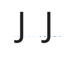
Bodoni dips slightly below the baseline with a softer curve, while Bodoni's descender is more compact and rounded.Didot's middle stems taper more dramatically and meet at a finer point, while Bodoni's stems stay thicker and intersect more sharply.
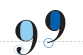
Didot on the left has a lighter baseline causing it to have a descender while Bodoni does not. Didot also has a curved rounded end while Bodoni has a short, thin, squared off end.
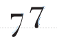
Both sevens have the same baseline, but the way they curve is different. Didot on the left curves to the left and Bodoni on the right curves to the right.
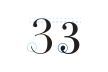
The two threes have the same baseline but the Didot on the left is much taller than Bodoni on the right. Didot on the left also has a very thin end curve at the bottom while Bodoni has a very round end.
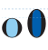
Opposite to the threes, the Didot zero is very short and squatty while Bodoni is tall and slender.The bottom of the fives are quite similar, but the top is where they differ. Didot on the left has a very strong whoop at the top while Bodoni on the right is quite squared off.The questions marks are very different. Bodoni on the right is very thick and curvy while Diot goings from being round and curvy to sharp and thin.
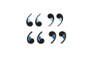
The general shape of the quotations marks are similar. They both have the round circle ends, but how much they curve towards the inside is different. The Bodoni curve on the bottom is more intense than Didot.The money signs have a very similar s curve, but the ends are different. Didot on the left has a sharp point while Bodoni on the right is a round ball.
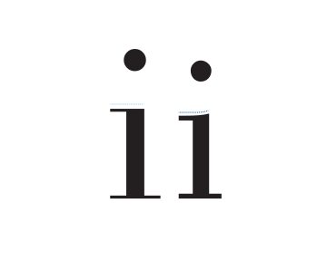
Curve of the lower case "i" is different.The lower case "z" in Didot is taller than lower case "z" in Bodoni.Curve of the Didot "r" is longer and more curved than the Bodoni "r".The negative space in the Didot "a" is larger than space in Bodoni "a".
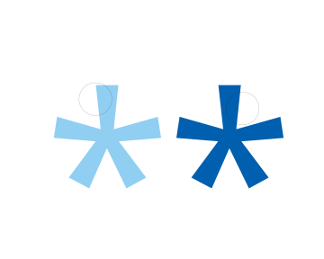
Didot asterix has more legs than Bodoni asterix.
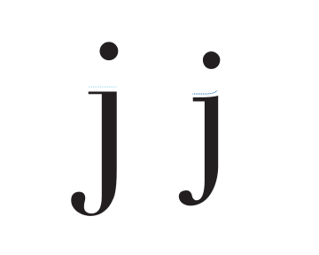
The swoop at the top of the j for Bodoni is curved while Didot is straight.Bodoni "c" is smaller than Didot "c".
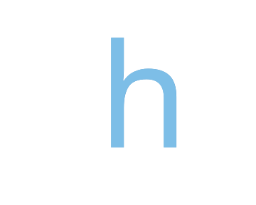
Didot "h" has a slightly larger arch than Bodoni "h".
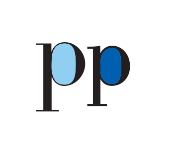
Didot "p" negative space is larger than Bodoni "p" negative space.
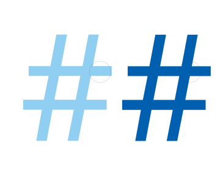
Didot hashtag is much skinnier in line width than Bodoni hashtag.
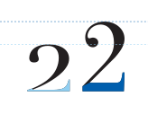
Comparison of the number two. Show the difference of heights with the dashed line with the respected color. Then comparing thickness of their bases.
Examples and visual references
Didot
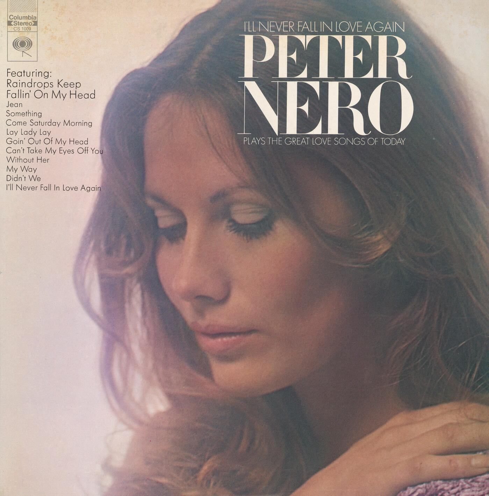
Didot used in Peter Nero's Album called "I'll Never Fall In Love Again".Both Didot and Bodoni were used to design this album cover titled "Nelson Eddy in Great Songs of Faith" created by Columbia Masterworks.
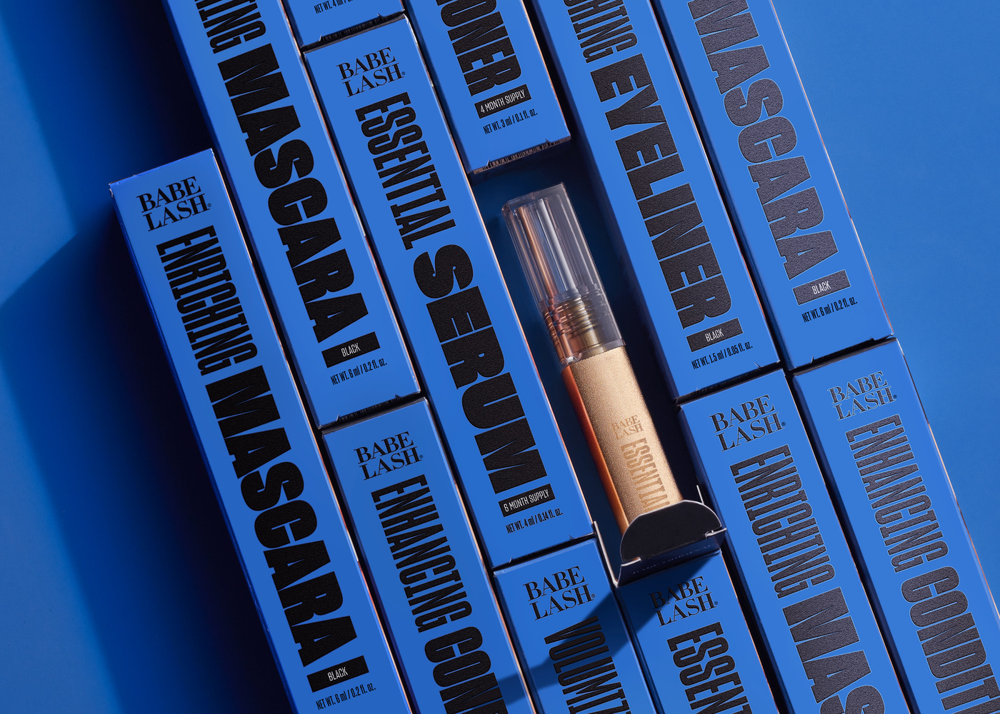
Didot was used for the logo of beauty brand called "Babe Lash" which is displayed on their lash serum packaging.
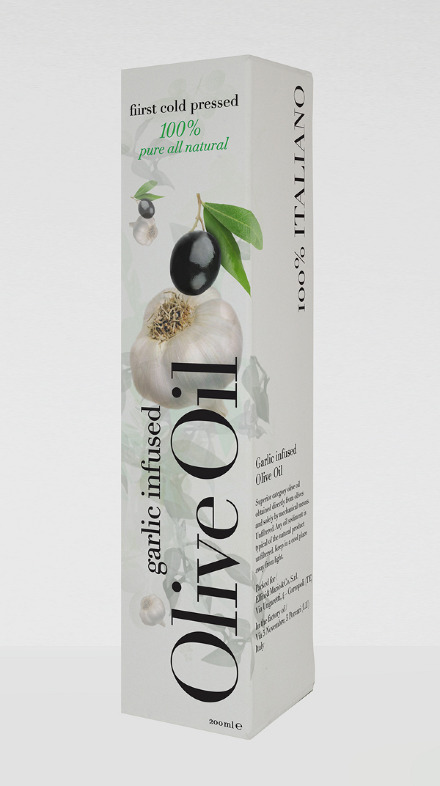
Olive Oil packaging used Didot typeface for a sleek and elegant product look.
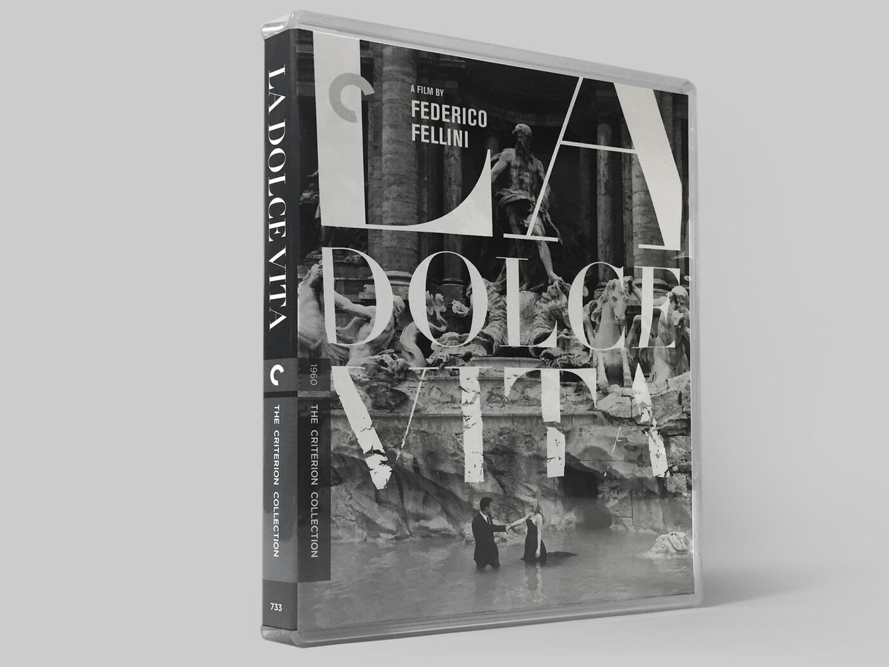
Didot used for title of DVD called La Dolce Vita by Federico Fellini.
Bodoni
Album cover by artist Roxette uses Bodoni for title and artist name.Book by Dan Piatkowski uses Bodoni for title called "Bicycle City".
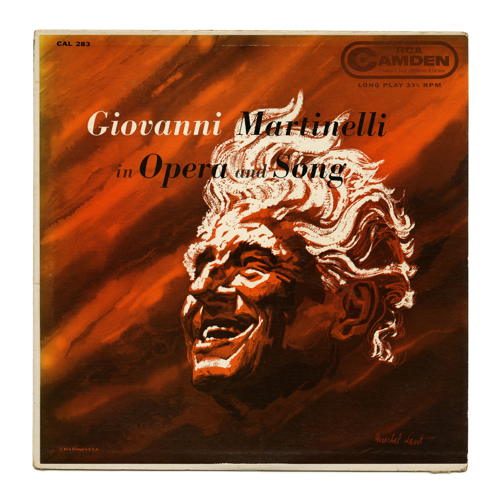
Opera Music album by Giovanni Martinelli that uses Bodoni as it's typeface.
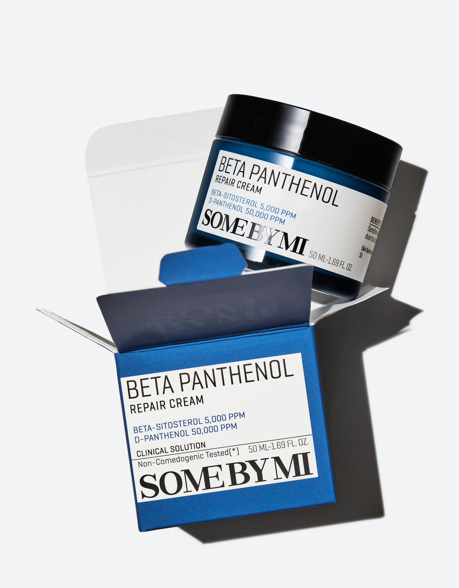
Beta Panthenol skincare product by the brand SOMEBYMI that uses Bodoni for title typeface.